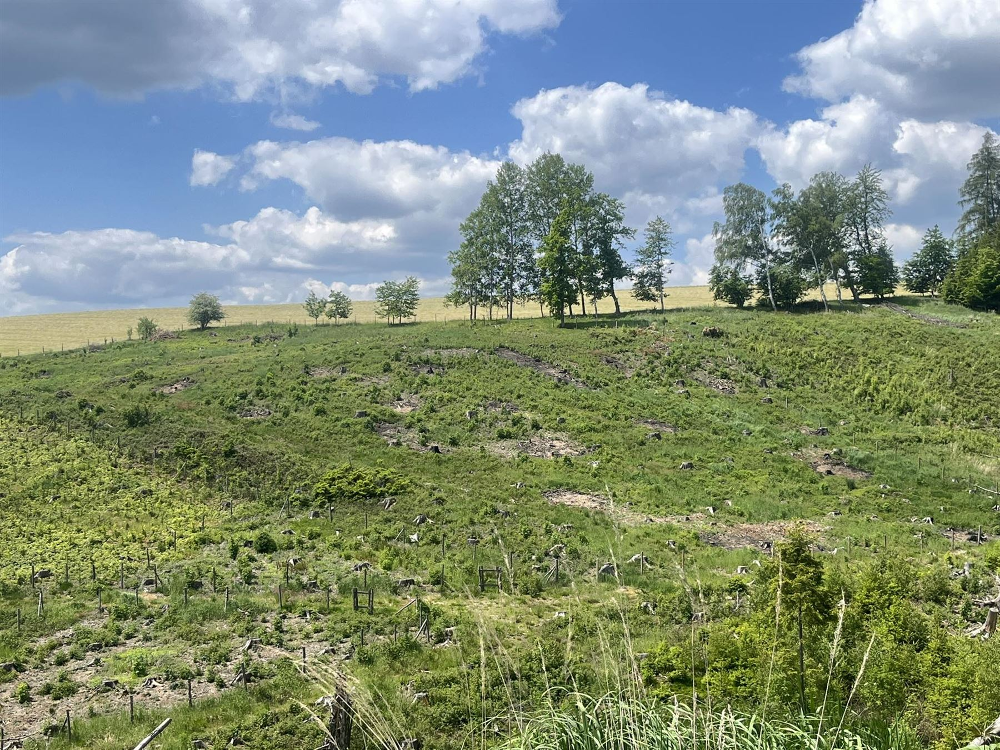
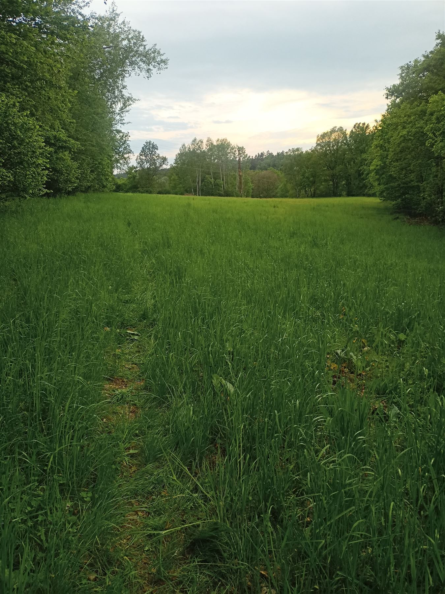

Trees for generations
Slow-growing giants for the next generations – walnuts, sweet chestnuts and, for example, the fascinating service tree (Sorbus domestica).
Revitalizace + Les
(Revitalisation + Forest)
Sky is not the limit
We turn forests killed by bark beetle, and fields and meadows worn out by chemicals and heavy machinery, into a living, edible landscape – fruit and nut trees, berries, medicinal herbs, ponds, wetlands and wild places.
A philanthropic project – everyone is welcome to join.
Our mission Join usVision
We see dead monoculture forests and exhausted fields and meadows turning into living, edible landscapes that hold water, rebuild soil, shelter wildlife and feed local people – and places where anyone can see that independent, sustainable living really works.
Mission
We restore damaged land with care and patience, keep old varieties alive, share what we grow and what we learn, and openly test solutions for life without fossil fuels.
Revitales is a philanthropic project. Restoring the land comes first – everything else follows.
Profit is not the goal – it is a secondary, logical result. When damaged land is healed, the outcome is a perfect place to live, surrounded by fruit, nuts and berries growing naturally, with clean water and rich soil. And it is a place where everyone is welcome to enjoy nature as it truly is – in its natural state and harmony.
No membership, no fees, no experience needed. If you care about nature, you belong here.
We plant trees whose shade we may never sit in. The real return is a healthier landscape for those who come after us.
The name Revitales joins two Czech words: revitalizace (revitalisation) and les (forest).
It all began in the forest. Like much of Central Europe, the land was planted as a spruce monoculture. The huge bark beetle outbreak of recent years killed it, leaving clearcuts with very acidic, tired soil. Our first idea was simple: buy these clearcuts and, instead of replanting the same thing, build an edible forest orchard.
Very quickly we saw that the forest is not the only wounded land. Fields and meadows around us are just as exhausted – poisoned by years of chemicals, compacted by heavy machinery, drained so that water runs straight off. Soil like that cannot breathe, hold water or support life.
So the mission grew: whether it is a dead spruce stand, a worn-out field or a compacted meadow, we give it the same answer – an edible orchard with wetlands, a diverse and resilient system that feeds people, wildlife and the soil itself.

Problem: dead monoculture, very acidic soil, no shade, drying out.
What we do: raise the pH with compost and mulch, plant nut and fruit trees in layers, dig ponds in the hollows.
Problem: soil poisoned by chemicals, compacted by heavy machines, drained – water runs off, life disappears.
What we do: loosen the soil with deep-rooting plants, bring back microbes with compost, restore wetlands, plant orchards and hedgerows.
➜ The result in both cases: an edible orchard with wetlands – food, water, shade and a home for wildlife.
We care for about five hectares spread over seven locations. Each one gets its own focus, so together they form a varied, living collection. The main themes are:
Slow-growing giants for the next generations – walnuts, sweet chestnuts and, for example, the fascinating service tree (Sorbus domestica).
Fruit trees combined with berry bushes in layers, giving harvests within a few years.
Former fields and compacted meadows brought back to life with ponds, wetlands and orchards that hold water and shelter amphibians.
Medicinal herbs plus “no-go” wild zones – nature’s own laboratory.
The themes above are a guide – the final layout of each site will follow its soil, water and slope.
Digging ponds and restoring wetlands to keep water in the landscape and create cooler, moister microclimates.
Supporting local food self-sufficiency with fruit, nuts, berries, herbs and wild vegetables.
Healing acidic forest soil and chemically exhausted, machine-compacted fields – composting to build a surplus of high-quality soil.
Preserving old local varieties and bringing in valuable ones from elsewhere.
Wild zones for insects, birds, amphibians, tiny crustaceans and soil microbes.
Propagating the best and toughest trees by grafting and cuttings, so good genetics multiply.
Space to rest, observe and learn from the quiet laws of nature.
A real site for testing energy for independent living – see below.
On every site we leave parts where people step back and nature leads. “No-go” does not mean empty – the opposite. We fill these zones with as much variety as possible, then watch what nature builds from it.
Piles, dry-stone walls and scattered rocks of different types and sizes – warm spots for lizards and insects, shelter for amphibians, minerals slowly returning to the soil.
Native trees and shrubs side by side with rarer species – willows, alders, oaks, rowans, hawthorns, wild roses and many more – each feeding different insects, birds and fungi.
Fallen trunks, stumps and branch piles left to rot, next to pools and wet hollows – the richest habitats of all, full of beetles, fungi, newts and microbes.
We watch and record who arrives, what grows where, how soil, water, plants and animals influence each other – and carry the lessons into our orchards.
Visitors are welcome to observe these zones from paths and viewpoints – quietly, so the experiment can run undisturbed.

Most varieties come from family-run Moravian nurseries that keep old cultivars alive:
We also plan to work with rareseeds.com and with permaculture projects in India.
Revitales is the parent site for the nGeni GreenBox from the Fourth Transition Initiative – a mechanical, solar-thermal machine designed to recycle energy and capture carbon directly from the air. A farm with no grid connection is the ideal place to find out what it really does.
Energy is never created from nothing – it only moves and changes form (the first law of thermodynamics). The surroundings, however, are full of free low-grade heat: sun-warmed air, soil and water.
A heat pump uses 1 kWh of electricity to deliver 3–4 kWh of heat, because it collects the rest from the environment. nGeni’s makers describe “over 100% efficiency at the point of use” in the same sense: you pay for less energy than you get, because the sun and the surroundings supply the difference.
The goal: show that fully independent, off-grid living is possible without fossil fuels and without extraction-heavy technologies – and do it openly, with measured data instead of promises.
Creators – our good friends and the heads of the project: Jason Marc Wood and Dr. Louis Arnoux.

Everyone is welcome – individuals, families, schools, gardeners, scientists, engineers, companies and other projects. Come for a day or stay for years. There are many ways to help:
Planting days, digging ponds, mulching, harvesting.
Seeds, scions, cuttings and old local varieties.
Permaculture, soil, water, ecology, energy, measurement.
Tools, materials, donations or joint projects.
Just write or call – we will gladly show you around and find a way for you to take part.
Honza Dobrovolný